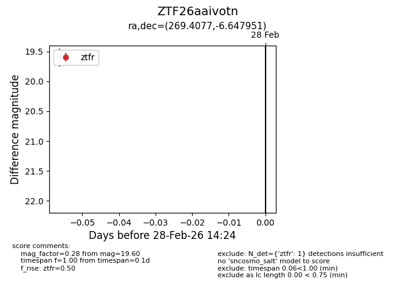
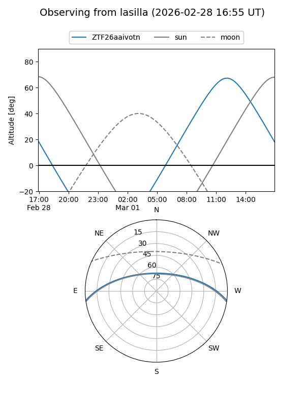
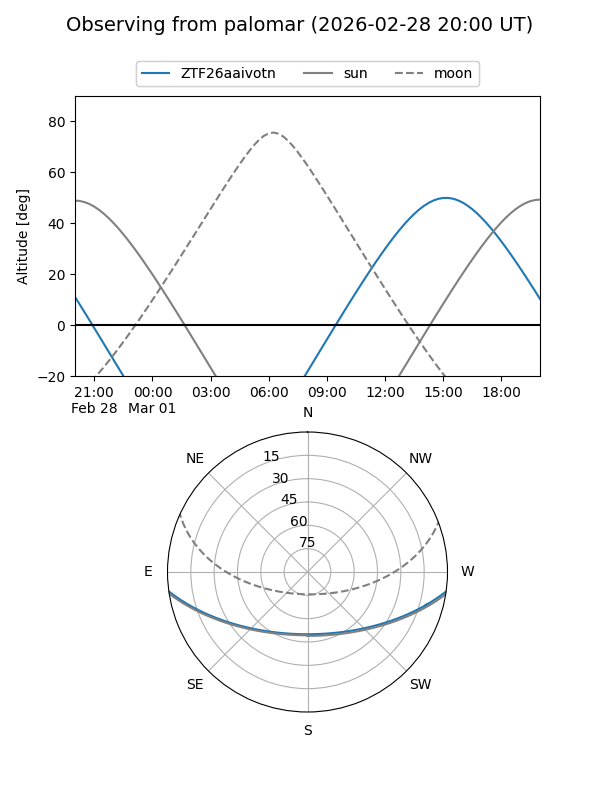

ZTF26aaivotn
Target ZTF26aaivotn at 2026-02-28 14:25
Aliases and brokers:
FINK: link
Lasair: link
ALeRCE: link
alt names
ZTF26aaivotn (ztf,fink_ztf)
Coordinates:
equatorial (ra, dec) = 269.4077,-6.64795
equatorial (HMS+DMS) = 17:57:37.85,-06:38:52.62
galactic (l, b) = (20.7585,+8.79238)
Flags:
Photometry:
last ztfr=19.60
1 ztfr detections
Lightcurve

Visibility


Additional plots